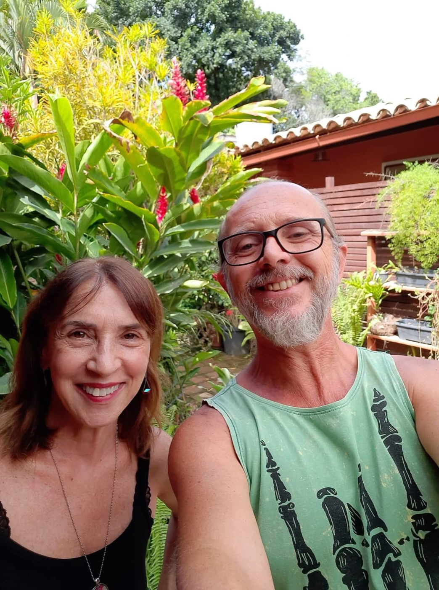

Descubra a Técnica de Silêncio Neural. Uma abordagem terapêutica manual de alta precisão para "desligar" o estresse, interromper o ciclo da dor e restaurar o equilíbrio natural do seu organismo.
Agendar minha sessão de avaliaçãoO estresse diário, traumas físicos e posturas inadequadas não desaparecem simplesmente; eles ficam armazenados no seu corpo. Quando o seu sistema nervoso central está sobrecarregado, ele entra em um estado de "ruído constante".
O resultado? Tensões que não cedem, dores crônicas, enxaquecas, insônia e a sensação de que o seu corpo perdeu a capacidade de relaxar. Você não precisa se acostumar a viver com dor.
Desenvolvida pelo especialista Roberto Carozo, a Técnica de Silêncio Neural é um protocolo terapêutico integrativo que vai muito além de uma massagem convencional.
Através de manobras manuais precisas, ritmo cadenciado e descompressões fasciais, o objetivo é comunicar diretamente com seus receptores nervosos. Nós "silenciamos" a hiperatividade do sistema nervoso, desativando os gatilhos de dor e tensão, para que o seu corpo possa acessar o sistema parassimpático, o estado onde a verdadeira regeneração e cura acontecem.

Se o seu corpo pede socorro, esta técnica foi desenhada para você. Ela é altamente indicada para:
Ideal para quem convive com fibromialgia, dores na coluna (cervical, lombar), enxaquecas tensionais e compressões nervosas, como a dor no nervo ciático.
Essencial para profissionais sob alta pressão, executivos e pessoas com sintomas físicos de estresse: bruxismo, tensão crônica nos ombros, insônia e ansiedade.
Perfeito para quadros de LER/DORT (Lesão por Esforço Repetitivo) ou para quem sente o corpo "travado" e rígido pelo acúmulo de tensão prolongada.
Redução significativa e progressiva de dores agudas e crônicas.
Melhora profunda na qualidade do sono e menos fadiga ao acordar.
Aumento da flexibilidade e a sensação de "corpo leve".
Ao silenciar o corpo, a mente encontra espaço para foco e tranquilidade.
A dor não deve ser a sua rotina. Permita-se experimentar o toque terapêutico que resgata a homeostase e devolve a sua vitalidade.
Falar com a terapeuta no WhatsApp